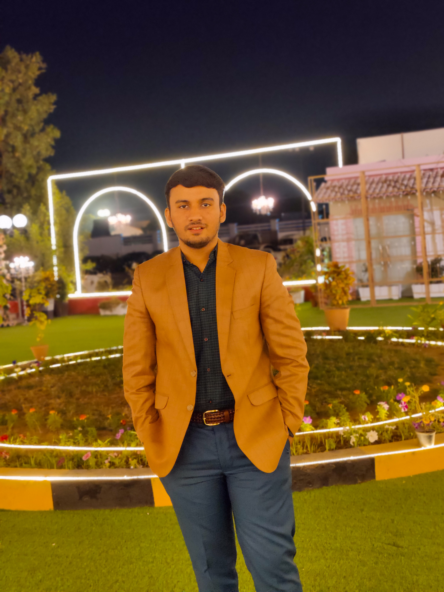

About Me
 Name:Rabi Khan
Role:Frontend Developer
Experience:Fresher
Address:Karachi, Pakistan
Name:Rabi Khan
Role:Frontend Developer
Experience:Fresher
Address:Karachi, Pakistan
Hello, I am Rabi Khan and I am a professional Web Developer. I have created many self-projects last year. I am very confident that my projects will outshine and give a refreshing feel to others.
I like challenges and I really want to face them to improve myself. Although in just a year, I have covered major parts in my field.
I am willing to provide my clients with better, stylish, and smooth websites. My aim is to contribute with professional team members and also learn the major aspects of web development and game development.
One more thing, below are projects that I have created in a year.
Profile: Front End Development
Domain: No Domain yet
Education (School): Studied from Little Roots (passed out in: 2021)
Education (College): Studied from DHA Degree College (passed out in: 2023)
Education (University): Currently studying in Iqra University BSCS (Bachelor in Computer Science) 2024 - 2028
Education (Institutions): Degree of ACIT and Web Developement Basic from Infra Institute, currently enrolled in SMIT
Languages: English, Urdu, Japanese
Skills: Computer hardware, C, Java, C++, Python, HTML, CSS, JS, JQuery, Bootstrap, PHP, MySQL
Hobbies: Football, coding, gaming, gym, game dev
6+ projects completed
LinkedIn Profile